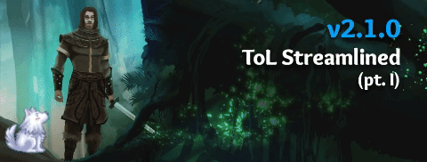

Throne of Lies Streamlined: Part 1
(Edit: Renamed header because only Alchemist was simplified. The rest is streamlined)

Overview:
- Glossary added.
- Nightshade replaced with bleeding.
- Bewilder replaced with Distract. Icy Touch now works like Distract.
- Occupation and redirection immunity removed from several classes.
- Abilities can no longer bypass occupation and redirection immunity. Mystic & Illusionist gained it.
- Frame and Mind Warp mechanic changes.
- Chronomancer mechanic change.
- Happy Hour rework.
- Prevention abilities, like Mercenary’s Stand Guard, now occupy all visitors instead of preventing them.
- Alchemist rework.
- Hunter rework.
- Mastermind rework.
- If the starting Mastermind dies, the starting Assassin will replace them.
- King’s Allies changed.
- New armors.
Store Content:
- Two new armors. One is a male golden armor for people with too much gold to spend. A female version of the gold armor will be coming out in the next few days.
Quality of Life:
- Glossary added with key mechanics defined. More info will likely be added to it later.
- Underlined words in chat and the class cards can be clicked on to open up the page of the glossary containing that mechanic. You can turn this off in the setting in the lobby.
General:
- Framed players will now only appear suspicious to Blue Dragon classes.
- Reworded abilities that do not count as visiting.
- If the starting Mastermind dies, the starting Assassin will replace them. (This replaces the old replacement mechanic.)
- Players can no longer edit their logs while on trial or while being executed.
- Changed Distract icon to Bewilder icon.
Minor Class/Ability Changes
Apostle & Illusionist:
- Mind Warp now makes anyone target player investigates appear framed to them.
Butler:
- Renamed Nightshade Wine to Poisoned Wine.
- Concentrated Wine no longer bypasses occupy immunity.
Court Wizard & Sage:
- Tornado no longer bypasses redirection immunity.
Enforcer:
- Stand Guard will now occupy all visitors to target Unseen member.
Evil King:
- Allies will now tell you the target player’s class type and whether they are an ally or not.
Fool:
- No longer occupy & redirection immune.
Good King:
- Allies will now tell you the target player’s class type. Special classes will appear as Investigative.
Inquisitor:
- Removed Nobody Expects the Spanish Inquisition passive.
Invoker:
- Replaced Bewilder with Distract. Still has 1 use.
- Can now force players to target themself with Strings of Mithras.
Maid:
- Improved how frame interacts with Matchmake.
Mercenary:
- Stand Guard will now occupy all visitors to target.
Mystic & Illusionist:
- Now occupy and redirection immune.
Observer:
- Following a framed player will now show them visiting a player that died that night if possible.
Poacher:
- No longer occupy & redirection immune.
- Spike Traps now occupies the target and everyone visiting them.
- Can now target allies with Spike Traps.
Possessor:
- No longer occupy & redirection immune.
- The description for Puppet Strings in the class card has been updated.
Physician:
- Removed references to Nightshade from abilities.
- Passive and Inoculate will not protect against the Butler’s poison.
Pretender:
- Replaced Silence with Distract. Still has 2 uses.
Psycho King:
- Is now bleed immune.
- The description for Fatal Guards has been updated.
Reaper:
- Icy Touch now works like Distract, but will only cost 1 soul.
Ritualist:
- Teleportation no longer bypasses redirection immunity.
Sage:
- Now occupies everyone all visitors to the target, except the Assassin.
Scorned:
- No longer occupy & redirection immune.
- Framed renamed to Incriminate
Sellsword:
- Stonewall now occupies all visitors to the target, except for those attacking or converting them.
- Will now know how many people they occupy with Stonewall.
Servant:
- Removed Bewilder.
- Concentrated Wine no longer bypasses occupy immunity.
Major Class/Ability Changes:
Alchemist:
- Prepared passive removed.
- Stoneskin Potion now has 3 uses.
- Concoct Potion removed.
- Now just has Crimson Potion and Emerald Potion as night abilities.
- Crimson Potion has unlimited uses.
- Emerald Potion has 2 uses.
- Class type changed to Support.
Assassin:
- New Passive “Apprentice” - If the Mastermind dies, the starting Assassin will take their place.
- Replaced Nightshade with Lacerate. Lacerate causes bleeding instead of poison.
Chronomancer:
- Distort Reality now transfers all delayed deaths to another player. Target player will not be notified.
- Distort Reality can now be used immediately after delaying a death with Time Warp.
- Distort Reality’s description in the class card now specifies that it is not an attack.
Drunk & Alcoholic:
- Happy Hour has been changed. It will now force the target player to target themself.
Hunter:
- Both passives have been removed.
- No longer Unique.
- Wolf Companion has been made a day ability. Still 2 uses. Not usable until Day 3.
- New Night Ability “Hunter’s Mark” - Target two players. If the first player targets the second, you will occupy and attack them. If you kill a BD, you will lose the use of this ability. 4 uses. Not usable until Night 3.
Mastermind:
- No longer occupy or redirection immune.
- Will no longer be hidden from investigations for the first 3 nights.
Other
- Fixed login screen “timeout 4” issue.